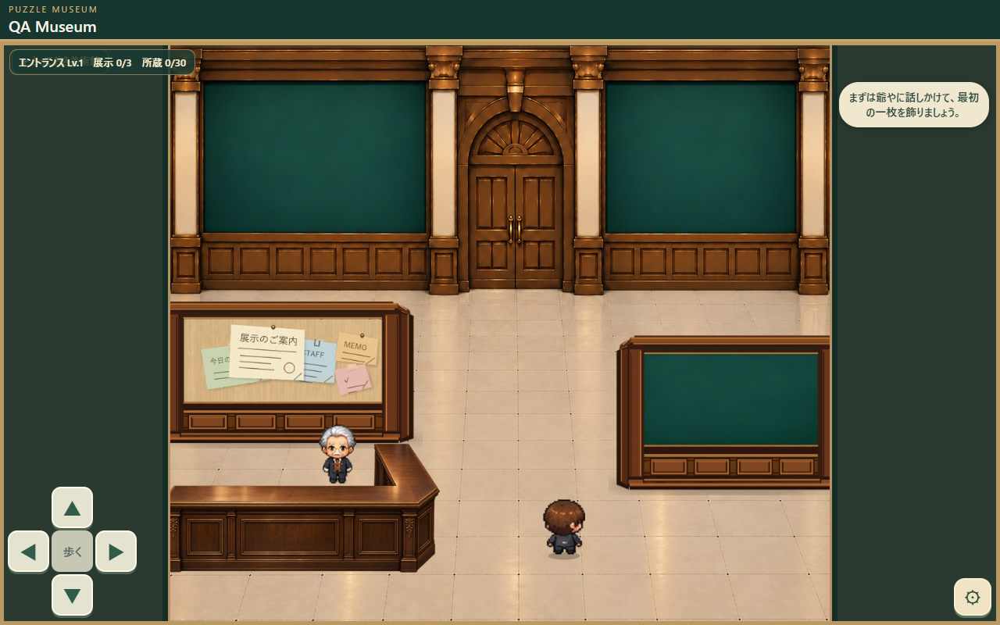

とっておき美術館｜エントランス実物比較
画像生成による想像図ではなく、実際のゲーム画面と正式承認済みLv.6画像です。
Lv.1｜実ゲーム画面

2026-10-29 Chromeでゲームを起動・撮影。QA用の名前表示。
Lv.6｜正式承認U案

2026-10-28承認済みの美術レビュー画像。Lv.6の実機スクリーンショットではありません。
画像生成による想像図ではなく、実際のゲーム画面と正式承認済みLv.6画像です。

2026-10-29 Chromeでゲームを起動・撮影。QA用の名前表示。
2026-10-28承認済みの美術レビュー画像。Lv.6の実機スクリーンショットではありません。